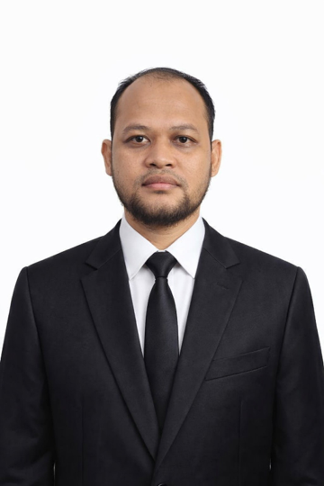

Research Director, Makruva · Graduate Researcher
I lead applied research at Makruva, a venture intelligence studio building AI-powered tools and systems for emerging-market challenges. My graduate research at UGM focuses on stochastic decision frameworks using machine learning and Monte Carlo simulation for agroindustry supply chain optimization. I work across the full research-to-product pipeline: algorithmic design, systems engineering, IoT prototyping, and AI agent architecture.
Applied research spanning stochastic optimization, AI systems, precision agriculture, and value-chain analysis.
Developing a stochastic decision-making framework combining machine learning with Monte Carlo simulation to optimize coconut agroindustry supply chain operations under uncertainty. Graduate thesis research.
Collaborative research with BRIN (National Research and Innovation Agency) on coconut downstream processing.
Multi-dimensional venture feasibility framework combining market sizing, competitive mapping, technical feasibility scoring, and financial modeling into a structured decision matrix. Now at v2.0.
IoT-based precision agriculture measurement and monitoring system. Real-time sensor data collection with agronomic decision support dashboard.
Collaboration with Prof. Ir. Moh. Khairudin, M.T., Ph.D., IPU — Universitas Negeri Yogyakarta.
Value-added processing of coconut derivatives for economic optimization across the agroindustry value chain.
Collaboration with Dr. Arry Darmawan, S.Si., M.Sc. — BRIN.
Production systems, hardware prototypes, and open-source tools from the Makruva Venture Intelligence Lab.
3D-printed water filtration system for rural and underserved communities. Combines additive manufacturing with locally sourced filter media to produce affordable, field-replaceable purification units.
Automated waste collection and incentive system for community recycling. Handles weighing, material identification, and credit disbursement for sorted recyclable deposits.
Psychometric founder assessment platform profiling entrepreneurs across 48 dimensions into four archetypes. DNA-style profiling with automated development recommendations.
Multi-agent orchestrator for AI development workflows. Real-time WebSocket coordination, session lifecycle management, and monitoring dashboard. Monorepo architecture.
Comprehensive SDLC framework covering nine phases from business requirements through deployment. Automated quality gates, security checklists, and AI-assisted review workflows.
Persistent contextual memory system for AI coding agents. Lifecycle-aware observation capture, vector-based semantic search, and temporal context retrieval.
Omnichannel CRM platform for Indonesian SMBs. Monorepo architecture, zero-downtime deploys, webhook proxy routing, and Developer API plugin system.
AI-powered B2B aggregator connecting international buyers with Indonesian suppliers. Matching engine with curation, contact facilitation, and trust ratings.
Books, research publications, talks, and mentorship on entrepreneurship, technology, and AI.
Coconut Downstream Processing Roadmap. Collaborative research with Dr. Arry Darmawan, BRIN on value-chain optimization for coconut agroindustry.
Starting a Business from Zero. A practical guide from mindset and idea through validation to execution for first-time founders.
Why Most Businesses Fail Before They Start. Analysis of venture failure patterns and prevention frameworks.
Using AI in Administration and Finance. Invited talk at Legal Kreatif, August 2026.
Lead a decision intelligence venture studio building and empowering new ventures through research, frameworks, technology, and ecosystem. Own digital product development, research direction, and AI-assisted engineering practice.
Develop digital and technology solutions supporting business transformation and data-driven operations for small and mid-sized clients.
Initiated and developed technology-based innovation and entrepreneurship programmes.
Magister Teknik Sistem. Thesis: Stochastic decision framework using ML and Monte Carlo simulation for coconut agroindustry supply chain optimization.
Open to research collaborations, speaking invitations, and interesting conversations.